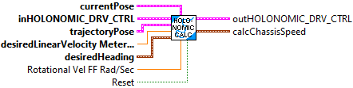
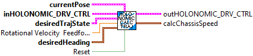
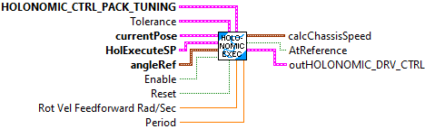
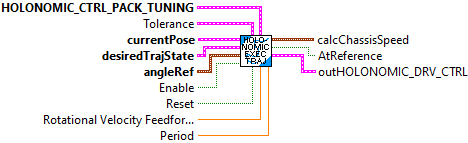
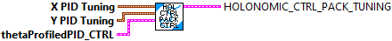
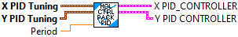

Returns the next output of the holonomic drive controller.
This version uses the Advanced PID instead of the standard PID for X and Y control.
Inputs:
- inHolonomicDrvCtrl -- controller datat structure
- currentPose -- The current pose.
- poseRef -- The desired pose.
- linearVelocityRefMeters -- The linear velocity reference.
- angleRef -- The angular reference.
Outputs:
- outHolonomicDrvCtrl -- controller datat structure
- calcChassisSpeed -- The next output of the holonomic drive controller.

Returns the next output of the holonomic drive controller.
This version uses the Advanced PID instead of the standard PID for X and Y control.
Inputs:
- inHolonomicDrvCtrl -- controller data structure
- currentPose -- The current pose.
- desiredState -- The desired trajectory state.
- angleRef -- The desired end-angle.
Outputs:
- outHolonomicDrvCtrl -- updated controller data structure
- calcChassisSpeed -- The next output of the holonomic drive controller.

Returns true if the pose error is within tolerance of the reference.
Parameters:
-Holonomic_Drv_Ctrl - Holonomic_Drv_Ctrl data structure
Returns:
- At Reference - Return value

Returns the next output of the holonomic drive controller.
@return The next output of the holonomic drive controller.Returns the next output of the holonomic drive controller.
Inputs:
- inHolonomicDrvCtrl -- cluster -- controller datat structure
- currentPose -- pose2d -- The current pose, as measured by odometry or pose estimator.
- trajectoryPose -- pose2d -- The desired trajectory pose, as sampled for the current timestep.
- desiredLinearVelocityMetersPerSecond -- double -- The desired linear velocity.
- desiredHeading -- rotation2d -- The desired heading.
Outputs:
- outHolonomicDrvCtrl -- controller datat structure
- calcChassisSpeed -- ChassisSpeeds -- The next output of the holonomic drive controller.

Returns the next output of the holonomic drive controller.
Inputs:
- inHolonomicDrvCtrl -- controller data structure
- currentPose -- The current pose, as measured by odometry or pose estimator.
- desiredState -- The desired trajectory pose, as sampled for the current timestep.
- desiredHeading -- The desired heading..
Outputs:
- outHolonomicDrvCtrl -- updated controller data structure
- calcChassisSpeed -- The next output of the holonomic drive controller.

This holonomic drive controller can be used to follow trajectories using a holonomic drivetrain (i.e. swerve or mecanum). Holonomic trajectory following is a much simpler problem to solve compared to skid-steer style drivetrains because it is possible to individually control forward, sideways, and angular velocity.
The holonomic drive controller takes in one PID controller for each direction, forward and sideways, and one profiled PID controller for the angular direction. Because the heading dynamics are decoupled from translations, users can specify a custom heading that the drivetrain should point toward. This heading reference is profiled for smoothness.
This convience function creates and executes a Holonomic Controller. It uses a packed Setpoint (SP), created by the HolDrvCtrl_PackSP.vi, as the setping and the current pose as the process variable. It returns a chassis speed as the control utput.
NOTE: This version does not support dynamic tuning. All the unint inputs and Tolerance are used only on the first call.
Inputs:
- X PID Tuning - Input from PACK PROF PID VI
- Y PID Tuning - Input from PACK PROF PID VI
- thetaController -- A profiled PID controller to respond to error in angle.
- CurrentPose -- Current location
-HolExecuteSP -- Desired location and speed cluster. This contains:
- Desired Pose -- X,Y,Heading
- Linear Velocity -- Desired velocity
- AngleRef -- Current angle of orientation.
- Enable -- Enable close loop control. If disabled, the feedforwards from the trajectory state are used.
- Period -- Execution period (Default 0.020) Seconds.
- Tolerance -- Amount of position and heading error allowed to be considered on target. (Default 0.04, 0.04, 0.034)
Outputs:
- ChassisSpeed -- ChassisSpeed setpoint calcuated from the inputs.
- AtTarget -- Boolean indicating the position and heading are within the provided tolerance.
- HolonomicDriveController -- Data structure (can be used for debug or extracting information)

This holonomic drive controller can be used to follow trajectories using a holonomic drivetrain (i.e. swerve or mecanum). Holonomic trajectory following is a much simpler problem to solve compared to skid-steer style drivetrains because it is possible to individually control forward, sideways, and angular velocity.
The holonomic drive controller takes in one PID controller for each direction, forward and sideways, and one profiled PID controller for the angular direction. Because the heading dynamics are decoupled from translations, users can specify a custom heading that the drivetrain should point toward. This heading reference is profiled for smoothness.
This convience function creates and executes a Holonomic Controller. It uses a Trajectory state as the setping and the current pose as the process variable. It returns a chassis speed as the control utput.
NOTE: This version does not support dynamic tuning. All the unint inputs and Tolerance are used only on the first call.
Inputs:
- X PID Tuning - Input from PACK PROF PID VI
- Y PID Tuning - Input from PACK PROF PID VI
- thetaController -- A profiled PID controller to respond to error in angle.
- CurrentPose -- Current location
- DesiredTrajectoryState - Desired heading, speed, and location.
- DesiredAngle -- Desired angle of orientation.
- RotationalVelocityFeedforward -- Desired rotational velocity Rad/Sec
- Enable -- Enable close loop control. If disabled, the feedforwards from the trajectory state are used.
- Reset -- Reset controllers. Do this at the start of following a new trajectory.
- Period -- Execution period (Default 0.020) Seconds.
- Tolerance -- Amount of position and heading error allowed to be considered on target. (Default 0.04, 0.04, 0.034)
Outputs:
- ChassisSpeed -- ChassisSpeed setpoint calcuated from the inputs.
- AtTarget -- Boolean indicating the position and heading are within the provided tolerance.
- HolonomicDriveController -- Data structure (can be used for debug or extracting information)

This holonomic drive controller can be used to follow trajectories using a holonomic drivetrain (i.e. swerve or mecanum). Holonomic trajectory following is a much simpler problem to solve compared to skid-steer style drivetrains because it is possible to individually control forward, sideways, and angular velocity.
The holonomic drive controller takes in one PID controller for each direction, forward and sideways, and one profiled PID controller for the angular direction. Because the heading dynamics are decoupled from translations, users can specify a custom heading that the drivetrain should point toward. This heading reference is profiled for smoothness.
This VI constructs a holonomic drive controller data structure.
Inputs:
- xController -- A PID Controller to respond to error in the field-relative x direction.
- yController -- A PID Controller to respond to error in the field-relative y direction.
- thetaController -- A profiled PID controller to respond to error in angle.
Output:
- outHolonomicDrvCtrl -- controller data structure.

Pack controller tuning configuration for Holonomic Drive Controller.
Inputs:
- X PID Tuning - Input from PACK PROF PID VI
- Y PID Tuning - Input from PACK PROF PID VI
- thetaController -- A profiled PID controller to respond to error in angle.
Outputs:
-- Holonomic_Ctrl_Packed -- cluster - packed controller configuration.

Convience, single call, LabVIEW function. Packs individual values into a cluster to feed to the Holonomic controller execute function.
Inputs:
- X -- X part of desired position
- Y -- Y part f desired position
- Heading_Deg -- Travel heading angle part of desired position (Degrees)
- LinearVel -- Velocity in the direction of heading.
Outputs:
- HolExecuteSP -- Setpoint (desired position and velocity) to feed to Holonomic Execute function.

Convience, single call, LabVIEW function. Packs "standard" constants for the X and Y PID controllers used by the holonomic controller.
NOTE -- This version does NOT support dynamic tuning. The constants are read only used during the first execution cycle.
Inputs:
- X PID Tuning -- PID Tuning parameters containing:
- Kp -- The proportional coefficient.
- Ki -- The integral coefficient.
- Kd -- The derivative coefficient.
- Maximum Integral -- The maximum value of the integrator.
- Minimum Integral -- The minimum value of the integrator.
- Y PID Tuning -- PID Tuning parameters containing:
- Kp -- The proportional coefficient.
- Ki -- The integral coefficient.
- Kd -- The derivative coefficient.
- Maximum Integral -- The maximum value of the integrator.
- Minimum Integral -- The minimum value of the integrator.
- Period -- Period of repeated calls in seconds. (Default: 0.020)
Outputs:
- X PID_Controller -- Created X PID_Controller data cluster
- Y PID_Controller -- Created Y PID_Controller data cluster

Convience, single call, LabVIEW function. Packs the tuning parameters of the Theta Profiled PID controller used by the Holonomic Controller.
NOTE -- This version does NOT support dynamic tuning. The constants are read only used during the first execution cycle.
Inputs:
- PID Tuning -- PID Tuning parameters containing:
- Kp -- The proportional coefficient.
- Ki -- The integral coefficient.
- Kd -- The derivative coefficient.
- Maximum Integral -- The maximum value of the integrator.
- Minimum Integral -- The minimum value of the integrator.
- PID Input Limits -- Cluster containing:
- MaxInput -- (Default: 0)
- MinInput -- (Default: 0)
- Continous -- When True indicates that the input is continuous. (Default: False)
- Max_Speed -- Maximum speed robot rotation
- Max_Accel -- Maximum acceleration of robot rotation.
- Period -- Period of repeated calls in seconds. (Default: 0.020)
Outputs:
- Theta Profiled_PID_Controller -- Created Theta Profiled PID_Controller data cluster

Enables and disables the controller for troubleshooting problems. When calculate() is called on a disabled controller, only feedforward values are returned.
Input:
- inHolonomicDrvCtrl -- controller data cluster
- enabled -- If the controller is enabled or not.
Outputs:
- outHolonomicDrvCtrl -- updated controller data cluster

Sets the pose error which is considered tolerance for use with AtReference function.
Inputs:
- inHolonomicDrvCtrl -- controller data cluster
- tolerance -- The pose error which is tolerable.
Outputs:
- outHolonomicDrvCtrl -- updated controller data cluster